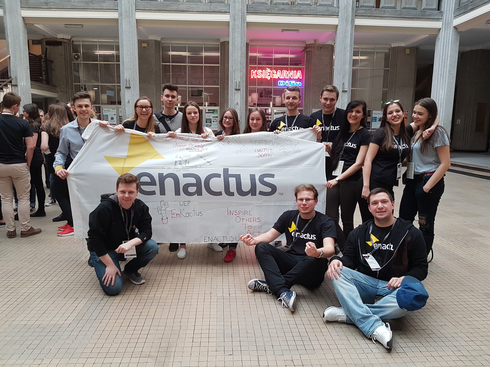
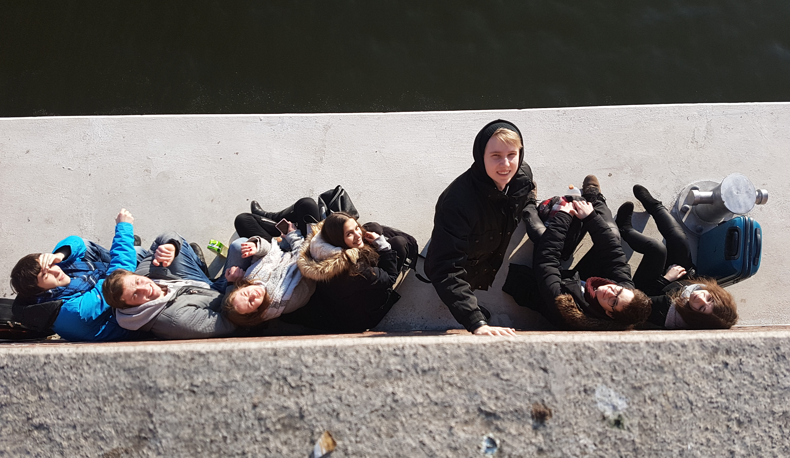
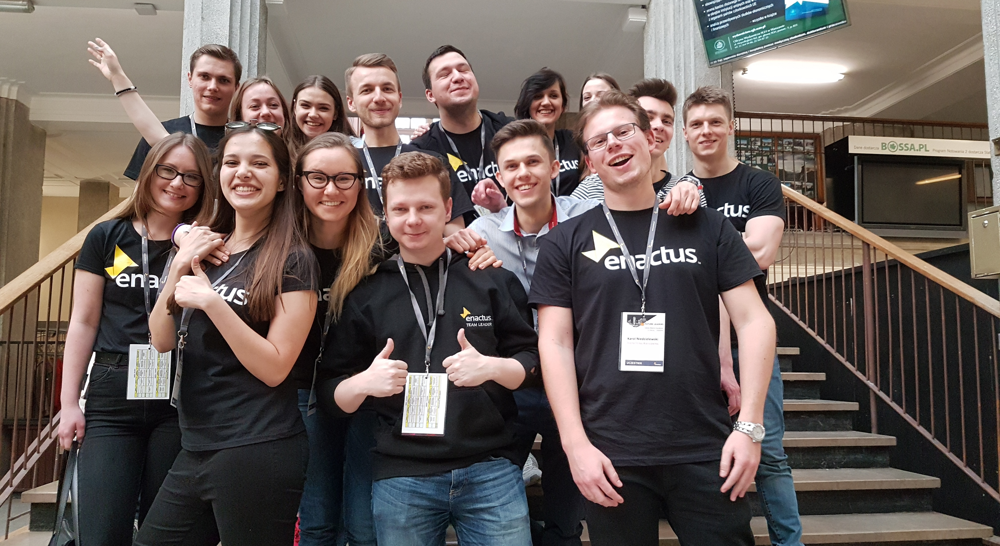
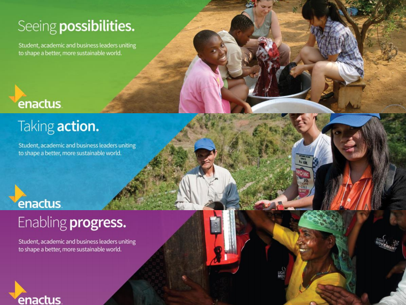
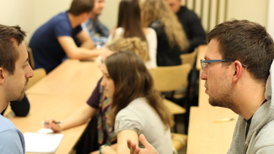
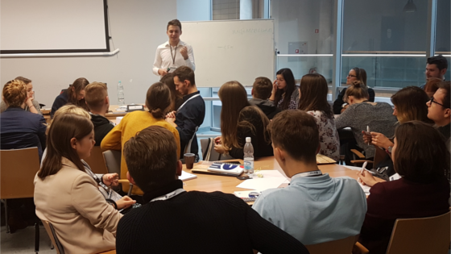

Kim jesteśmy?
Studiujemy na różnych wydziałach, mamy różne charaktery i posiadamy różne umiejętności. Tworzymy interdyscyplinarny i dopełniający się zespół, któremu nie straszne żadne wyzwania!
Jak działamy?
Tworzymy projekty, które skupiają się wokół rzeczywistych problemów społecznych, ekonomicznych i ekologicznych. Opracowujemy rozwiązania oparte o modele biznesowe, których celem jest długotrwała poprawa sytuacji grupy docelowej projektu. Staramy się ściśle współpracować z odbiorcami projektu by był on do nich jak najlepiej dostosowany, a w naszej pracy wykorzystujemy metodykę Enactus, która jest dokładniej przedstawiona w sekcji Projekt Enactus - jak wygląda?
Cel, idea, misja - czyli dlaczego?
Jesteśmy w Enactusie z różnych powodów, ale wszystkich nas łączy jeden cel - pragniemy inicjować pozytywne zmiany w naszym otoczeniu. Nasza kreatywność połączona z wiedzą mentorów ze świata biznesowego i akademickiego pozwala nam w sposób innowacyjny i stabilny kreować te zmiany. Lubimy widzieć, że nasze działania przynoszą wymierne efekty i poprawiają warunki życia i zasoby grupy docelowej projektu.
Co zyskasz?
W ciągu roku istnieje wiele możliwości zaangażowania się - możesz na przykład być członkiem projektu lub jego liderem, wspierać organizację w pracy operacyjnej, pomagać pozyskiwać partnerów czy prezentować zespół na konkursie Enactus Poland, o którym przeczytasz niżej. Lista naszych działań jest jeszcze dłuższa, więc na pewno znajdziesz coś dla siebie i między innymi zyskasz:
Wiedzę i doświadczenie
Poznasz tajniki zarządzania projektami, tworzenia modeli biznesowych, kierowania zespołem i wiele innych.
Przyjaciół
Zawrzesz dużo nowych znajomości z pozytywnymi i otwartymi ludźmi.
Satysfakcję
Poczujesz, że Twoja praca ma sens - tworzysz coś wartościowego dla siebie i innych.
Poznasz liderów biznesu
Będziesz miał okazję porozmawiać i zaprezentować się przed prezesami największych polskich firm.
Projekt Enactus - jak wygląda?
Nie daj się przerazić tym wszystkim nazwom poniżej, to wszystko robią studenci tacy jak Ty :)

Seeing possibilities
Jest to pierwszy etap projektu w Enactusie, w którym wybieramy grupę docelową projektu i definiujemy problem, który chcemy rozwiązać. Na tym etapie posługujemy się głównie ankietami oraz wywiadami przeprowadzanymi z grupą docelową oraz analizą dostępnych danych i trendów widocznych w otoczeniu.
Taking action
Znając problem, przystępujemy do kreowania rozwiązania wraz z ogólną koncepcją modelu biznesowego. Następnie tworzymy pierwsze prototypy, które testujemy i ulepszamy na bazie informacji zwrotnej. W tym etpie wykorzystujemy burze mózgów, Design Thinking, Lean Canvas i wiele innych.
Enabling progress
W ostatnim etapie wprowadzamy rozwiązanie na rynek dbając o zbudowanie skali i zapewnienie stabilności modelu biznesowego. Ten etap różni się najbardziej w zależności od projektu, często wykorzystuje się narzędzia pomagające w modelowaniu procesów i ich udoskonalaniu.
Enactus Poland National Competition
Inspirująca rywalizacja...
Co roku zespoły Enactus z całej Polski prezentują realizowane przez siebie projekty na ogólnopolskim konkursie Enactus Poland National Competition. W wydarzeniu bierze udział ponad 100 jurorów ze świata biznesu, często prezesów lub dyrektorów generalnych największych polskich firm, którzy oceniają projekty, udzielają wskazówek i oferują wsparcie najlepszych. Zwycięski zespół Enactus reprezentuje Polskę na Enactus World Cup, o którym przeczytasz niżej. Jako Enactus PW mieliśmy już trzykrotnie okazję wystąpić i zaprezentować nasze projekty na tym wydarzeniu. W tegorocznej edycji konkursu przedstawiliśmy dwa projekty: Easy Med i Ośmiorniczki dla Wcześniaków.
Enactus na świecie to…
36
Państw
72000
Studentów
1720
Uczelni
550
Partnerów
Enactus World Cup
Wybieramy najlepszy projekt na świecie!
Enactus World Cup jest dorocznym świętem wszystkich osób zaangażowanych w Enactusa na całym świecie. Wydarzenie odbywa się w ostatnich dniach września, co roku w innym kraju (trzy ostatnie to Wielka Brytania - Londyn, Kanada - Toronto i RPA - Johannesburg). Wybór projektu odbywa się na podobnej zasadzie jak w National Competition, a w jury zasiadają przedstawiciele globalnych firm. Poza projektową rywalizacją są też wydarzenia towrzyszące, które skupiają się na promocji kultury uczestniczących krajów i integracji pomiędzy zespołami z różnych państw.
Twoje pierwsze dni jako członek Enactus PW
Z werwą wchodzisz w enactusowy świat, zaczynasz od…
Weekend Wdrożeniowy
Dzięki niemu płynnie wejdziesz w życie organizacji: poznasz członków zespołu, sposób w jaki pracujemy, strukturę organizacji i wiele innych. Oprócz tego zostaną przeprowadzone dwa warsztaty, które pomogą z sukcesem rozpocząć pracę nad projektami


Konferencja Enactus Starter
Dwudniowe wydarzenie pełne merytorycznej wiedzy z zakresu zarządzania projektami, pracy w grupie, autoprezentacji i wielu innych dziedzin. Prawdziwy zastrzyk motywacji na początek. Świetna okazja do zintegrowania się nie tylko z Enactusem Twojej uczelni, ale poznania zespołów z całej Polski, które również przyjdą na konferencję. W tym roku odbędzie się ona w Warszawie, a na konferencji pojawią się zespoły m.in. z Poznania, Łodzi, Krakowa, Gdańska i Wrocławia.
Dołącz do nas!
Jeżeli Cię zaciekawiliśmy i zastanawiasz się nad dołączeniem do nas, to wypełnij krótki formularz i daj się lepiej poznać. Odpowiemy na każde zgłoszenie :)
Copyright © 2017 Dołącz do Enactus PW!. All rights reserved.
Designed by ThemeSpade.